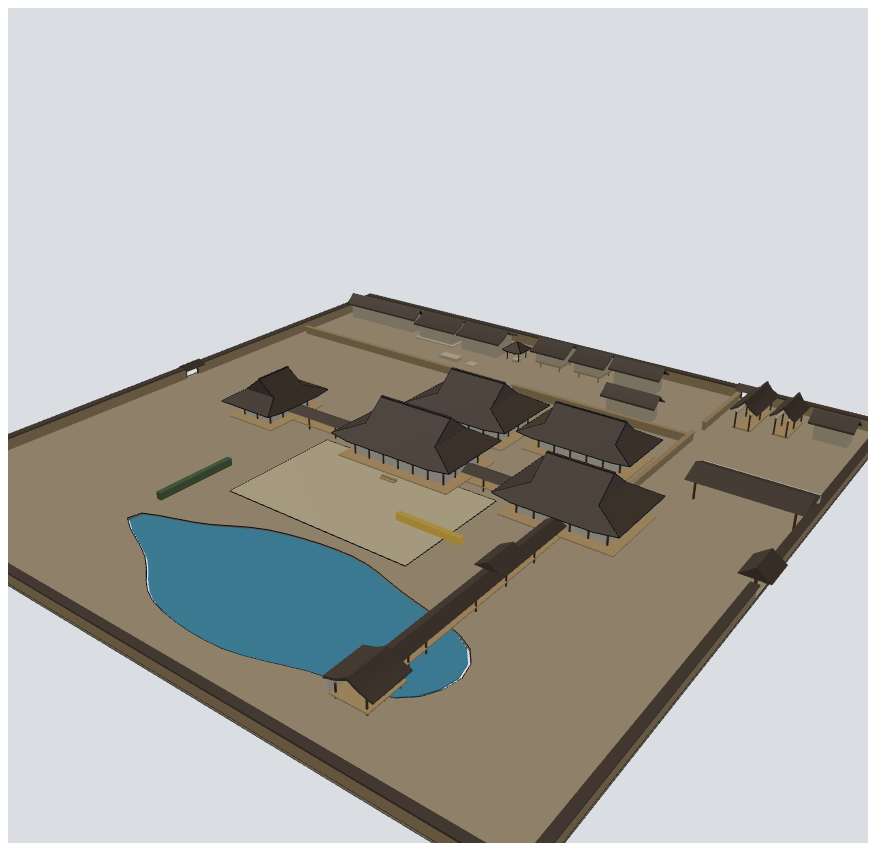
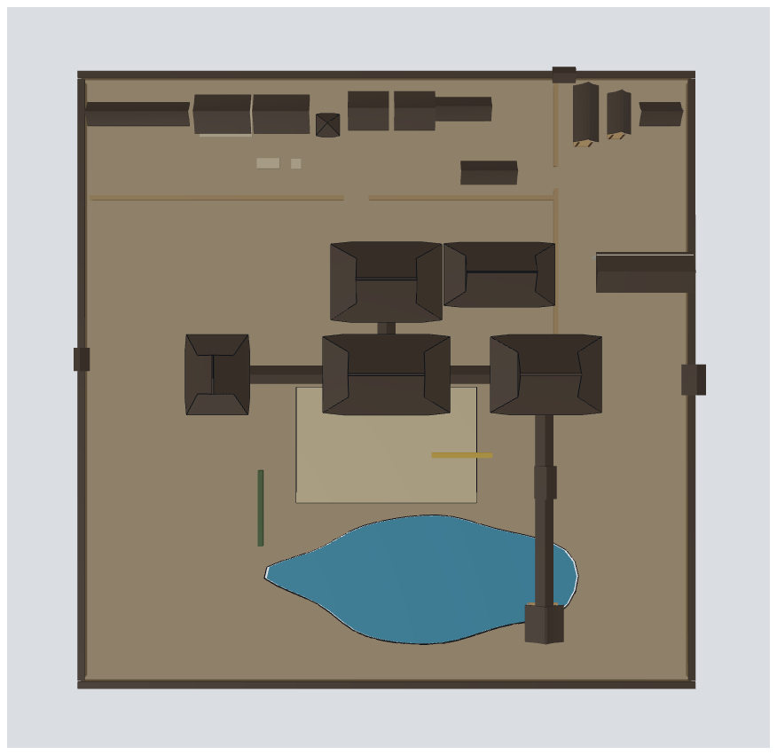
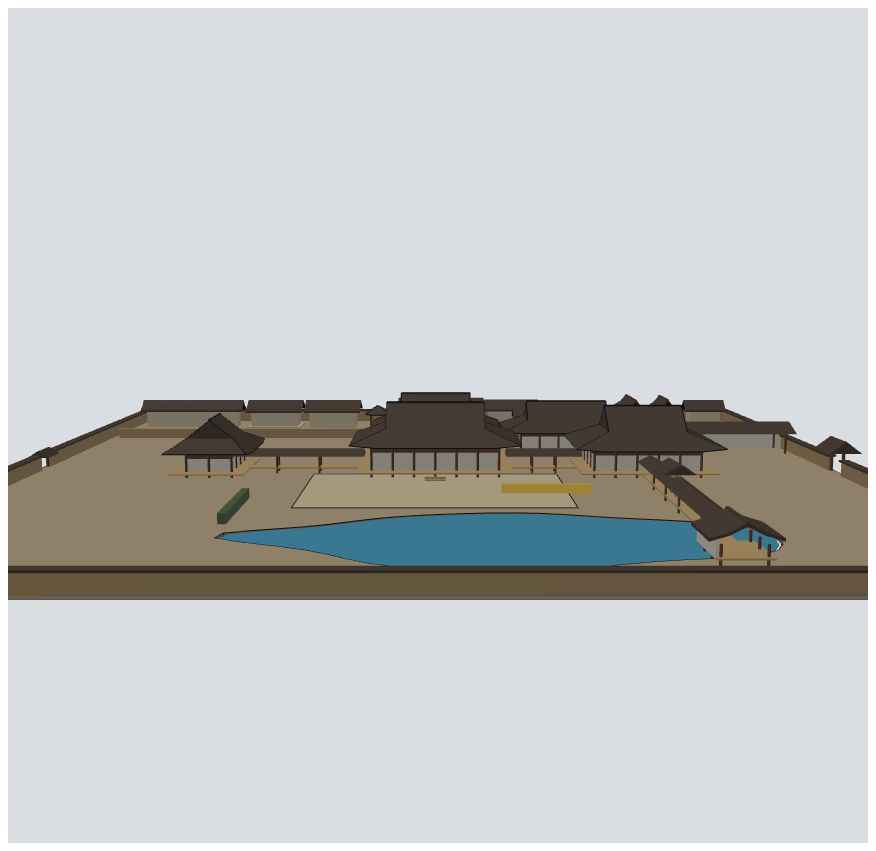

寝殿造と中下級官人住宅 ― 確認できる範囲と復元上の推定
教科書的な一町規模の寝殿造だけで都を埋めず、身分と宅地規模による差を表すための整理。現時点の資料で確認できる内容と、箱庭で景観を構成するための推定を分けて記す。
本文掲載図（shinden-estate@v1）



確度の表示
| 区分 | 意味 | この記事での例 |
|---|---|---|
| 確認 | 寸法資料や既存調査で確認できる | 町の寸法、後期資料に見える宅地規模 |
| 比較 | 後世資料から900年前後を考える参考 | 完成形の寝殿造、小規模邸宅の省略傾向 |
| 推定 | 直接資料が不足するため採用した復元案 | 1/16町の棟構成、中下級官人宅と庭 |
調査で確認できること
- 平安京の一町は40丈四方、約121.2m四方、約14,700㎡である。
- 後期の邸宅配置資料には、一町だけでなく1/2・1/4・1/6・1/8町を占有する邸宅が描かれる。ただし900年前後の一般則ではない。
- 寝殿、対屋、渡殿、中門廊、南庭、池、釣殿を備える左右整然とした姿は、主に平安中後期の記録や復元から理解される上級邸宅の完成像である。
- 900年前後の個々の邸宅は、位置や所有者が分かっても内部平面まで確定できない例が多い。
寝殿造をどう縮小して考えるか
一町規模の完成像を全邸宅へ一律に当てはめない。小規模化は全棟を均等縮小するのではなく、格式の低い施設を省く形で表現する。
- 一町級：寝殿、東西の対屋、渡殿、中門廊、南庭、池を置ける最上級邸宅の代表像。
- 1/2町級：寝殿と片側の対屋を中心とし、左右非対称にする。池や釣殿は縮小または省略する。
- 1/4町級：主殿と付属屋、短い廊、小庭を基本とする。「寝殿造系の小規模貴族住宅」と扱う。
- 1/8町以下：寝殿造の縮小模型ではなく、主屋を中心とする都市住宅へ段階的に移行させる。
ここでいう1/2〜1/8町の内部構成は、後期資料の占有面積を手掛かりにした箱庭上の代表配置であり、901〜930年の標準平面を示すものではない。
中下級官人住宅
901〜930年の中下級官人宅について、階層別の標準平面を直接示す資料は現時点で確認できていない。次の構成は、宅地面積と都市生活に必要な機能から組み立てた復元案である。
| 敷地 | 面積の目安 | 箱庭での代表構成 |
|---|---|---|
| 1/8町 | 約1,800㎡。分割例なら約30×60m | 主屋、独立した厨、倉・物置、便所、土庭、菜園 |
| 1/16町 | 約900㎡。分割例なら約30×30m | 主屋、厨兼物置または付属屋、便所、狭い作業庭 |
1/16町は既存の後期配置図で確認した単位ではなく、一町をさらに分割した場合の面積計算である。住人の官位、収入、家族、従者、職務によって実際の規模には差があったと考える。
掘立柱と建物の見え方
掘立柱は柱を地面の穴へ立てる工法名であり、それだけで粗末な小屋を意味しない。官人宅の具体的な構造・屋根材・床構成を直接裏付ける出典は不足しているため、箱庭では次を確定事項にしない。
- 主屋は掘立柱を基本案とするが、一部板敷き、土間、板壁などの組合せは推定。
- 庶民の小屋との差は工法だけでなく、門・垣、建物の手入れ、板敷き、文書箱や机などの調度で表す。
- 下級官人を一律に貧困層へ含めず、六位前後の官人、書記・史生、雑役層の間に差を付ける。
庭の復元方針
中下級官人宅の庭は池泉庭園ではなく、生活のための土庭に小さな前栽を加えたものとして復元する。これも標準平面を示す直接資料ではなく、必要機能からの推定である。
- 門から主屋までは踏み固められた土。雨水を流す浅い溝を設ける。
- 厨の脇に薪、水甕、桶、灰置き場、物干しなどを置く。
- 塀際に小規模な菜園や薬草、季節の草花を置き、余裕があれば果樹を1本置く。
- 1/8町では作業庭・菜園・前栽を分け、1/16町では中央の土庭を炊事、作業、物干しに共用する。
- 全面の白砂、池、橋、大きな石組、左右対称の植栽は上級邸宅向けとし、中下級官人宅には用いない。
一町級の大型寝殿造に含める要素
以下は平安中後期の記録・絵画・復元から理解される上級邸宅の典型構成である。901〜930年の全邸宅が同じ平面だったことを示す一覧ではなく、個々の邸宅では片側の対屋や水辺施設などが省略・変更されうる。
| 区分 | 建物・要素 | 主な役割 | 扱い |
|---|---|---|---|
| 中心 | 寝殿 | 主人の居所、儀礼、饗宴、接客 | 大型邸宅の中核 |
| 居住 | 東対・西対 | 家族や近親者の居住、接客 | 両方そろう姿は完成像 |
| 接続 | 渡殿・透渡殿 | 寝殿、対屋、中門廊を結ぶ | 典型構成 |
| 入口 | 中門・中門廊 | 南庭への儀礼的な入口、来客動線 | 典型構成 |
| 警固 | 侍所・随身所などの詰所 | 家司、侍、随身、従者の待機 | 名称と位置は邸宅ごとに要確認 |
| 儀礼 | 南庭 | 儀礼、饗宴、舞、行列の待機 | 大型邸宅の重要要素 |
| 庭園 | 池・中島・遣水・橋 | 舟遊び、観賞、宴、排水 | 規模と形は個別に異なる |
| 水辺 | 釣殿・泉殿 | 池畔の遊興、納涼、眺望 | 全邸宅必須ではない |
| 家政 | 台盤所・厨・雑舎 | 調理、配膳、物資管理、奉仕者の作業 | 存在は必要だが平面は推定を含む |
| 収納 | 倉 | 食料、調度、文書などの保管 | 位置・棟数は推定 |
| 交通 | 車宿 | 牛車を雨から守り、整備・待機させる | 牛車常備邸に置く復元案 |
| 家畜 | 牛屋・馬屋 | 牛馬、飼料、敷藁の管理 | 車宿から分離する復元案 |
| 外周 | 築地塀、正門、脇門、通用門 | 格式、防犯、来客・搬入動線の分離 | 門の格式は家格で変える |
| 生活基盤 | 井戸、排水溝、便所、薪置場 | 給水、排水、衛生、燃料保管 | 必要機能からの推定 |
代表配置では寝殿を北寄りに置いて南庭へ向け、東西に対屋、南庭の先に池を置く。厨・倉・従者施設は北側や外周へ寄せ、儀礼空間と生活作業を分ける。牛車の入口から車宿までは、急角度で曲がらず進める直線動線を確保する。
家政・奉仕区画と車馬区画
901〜930年の大型私邸について、台盤所・厨・井戸・使用人居所・車宿・牛屋・馬屋の位置を一括して示す標準平面は現時点で確認できていない。以下は、施設の機能、後世の邸宅復元、官衙・離宮の比較材料を組み合わせた箱庭上の代表配置である。
比較材料として、官人の曹司には奈良時代中期以降に井戸や厨が設けられたとされ、朱雀院では916年の競馬御覧と927年の信濃駒牽御覧から馬場・厩の存在が強い。ただし、官衙や離宮の設備を全ての大型私邸へそのまま当てはめることはできない。
| 施設 | この記事での機能整理 | 確度 |
|---|---|---|
| 台盤所 | 配膳、食器管理、奉仕者の食事に関わる場所 | 機能上の整理。900年前後の厳密な平面・名称区分は未確認 |
| 厨 | 火を使う調理、湯沸かし、下ごしらえ | 必要機能からの復元。独立棟か複合棟かは未確定 |
| 政所 | 家司による家政・所領・文書管理 | 大規模邸宅へ置く比較復元 |
| 侍所・随身所 | 侍、随身、従者の詰所 | 存在・名称・位置は邸宅ごとに要確認 |
| 雑舎・長屋 | 下人、雑色、牛飼童などの居住・待機・作業 | 人数と棟数からの復元推定 |
| 井戸・水場 | 飲料、炊事、洗浄、消火用水 | 必要機能からの復元。井戸位置は発掘資料との照合が必要 |
| 倉・薪置場・灰置場 | 食料、食器、燃料、調理廃棄物の管理 | 必要機能からの復元推定 |
| 車宿・牛屋・馬屋 | 車体、牛、馬、飼料、敷藁の管理 | 牛車常備邸へ置く復元推定 |
箱庭では、北側または外周に裏方用の帯状空間を確保し、主人の儀礼空間から板塀や建物列で緩く分ける。台盤所は主人側へ近づけ、火を使う厨、井戸、倉、長屋は搬入用通用門へ近い家政区画に置く。
車宿・牛屋・馬屋・飼料置場は車門に近い車馬区画へ集めるが、厨・井戸とは板塀と距離で分離する。糞尿、汚水、煙、火災の危険を主人空間と水場へ持ち込まないための配置判断であり、900年前後の一般則として確認したものではない。
本プロジェクトの一町邸では、北西〜中央を家政区画、北東を車馬区画とする。裏方空間を確保するため、寝殿・対屋・渡殿などの主人空間を初期案から南へ6〜8m移す。これは表示と動線のための固有調整であり、寝殿造一般の固定寸法ではない。南庭と池の間隔を維持できない場合は移動量を減らす。
牛車を持つ邸宅の扱い
894年に牛車の奢侈を理由とする一時乗車禁止があり、舞台直前には貴族の乗用が社会問題になるほど普及していた。一方、六位以下の乗車禁止は999年の規定であり、これを901〜930年の所有資格としてそのまま遡らせることはできない。
- 箱庭では従五位下以上を乗用牛車を常備しうる安全側の目安とするが、史料で確定した900年前後の所有境界ではない。
- 皇族・公卿・大臣級は複数台、四位・五位級は家の財力に応じて1台、六位以下は原則として常備しない代表配置とする。
- 貴族家の女性は本人の官位だけでなく、父・夫・所属する家の格式によって牛車を利用する。
- 牛車宣旨は牛車の所有許可ではなく、乗車したまま宮中へ入る特別待遇として区別する。
網代車は檜や竹の薄板を張る車の総称で、八葉車や半蔀車も網代車の系統に入る。網代車・八葉車・檳榔毛車・糸毛車は大きな車輪、箱形の屋形、二本の轅という基本構造を共有し、表面材・文様・窓・庇が主に異なる。唐庇車は大型で庇と屋根形が発達する。
車宿・牛屋・牛車対応門
『延喜内匠式』が記す牛車の屋形は長さ8尺、高さ3尺4寸、幅3尺2寸である。これは客室部分の寸法であり、車輪、屋根、轅を含む外形寸法ではない。全高・全長と車宿・門の実測史料は現時点で確認できていないため、次の値は箱庭で接触を避けるための暫定値とする。
| 要素 | 箱庭での復元目安 | 確度 |
|---|---|---|
| 牛車用門の有効幅 | 3.5〜4m | 衝突回避用の推定 |
| 牛車用門の有効高 | 3.2〜3.5m | 衝突回避用の推定 |
| 屋根付き門の棟高 | 5〜6m | 意匠を含む推定 |
| 1台用車宿 | 幅3.5〜4m、奥行6〜7m | 轅を収める想定値 |
| 門前・門内の直線空間 | 各6〜10m | 牛と轅を直進させる想定値 |
牛車用の入口を無屋根にする必要はない。四脚門・棟門などの屋根付き門でも、冠木と屋根を高くして必要な有効高を確保できる。正門または車門は牛車用、脇門は徒歩、裏の通用門は薪・食料・荷物の搬入用と分ける。車宿は正面を大きく開いた長い屋根付き建物とし、糞尿と湿気を避けるため牛屋とは分離する。
箱庭での採用基準
- 一町級の整った寝殿造は皇族・摂関家・大臣級など少数に限定する。
- 中小規模の貴族邸は、片側の対屋や小庭を持つ非対称な構成にする。
- 1/8町は3棟前後、1/16町は2棟前後を目安とするが、これは表示上の代表値である。
- 中下級官人宅は寝殿造の縮小版にせず、主屋・付属屋・生活庭からなる独立した住宅類型として扱う。
参照資料と今後の課題
- 平安京の坊条・邸宅解説 — 町・坊・街路寸法の確認。
- Weblio「寝殿造り」 — 寝殿造の一般構成。
- 風俗博物館「源氏物語の住まい」 — 平安中後期の上級邸宅を理解する比較資料。
- 『平家物語』を読むための平安京図 — 後期の邸宅分布と占有規模の比較資料。
- 今後は、平安京の宅地発掘報告から掘立柱建物、井戸、溝、塀、竈の組合せを町ごとに確認し、中下級官人宅と商工民宅の差を検証する。